British Academy Writing Workshop on International Politics in Africa
A British Academy–funded writing workshop that supports scholars working on the international politics of Africa, organised within the IPIA network.
Workshop Overview
The BA Writing Workshop on International Politics in Africa brings together a select group of academics to work intensively on draft papers, receive feedback from peers and journal editors, and take part in sessions designed to strengthen academic writing and research methods.
Participants prepare a paper for submission to a peer-reviewed journal and use the workshop process to refine their arguments, framing, and evidence. Thematically, the workshop focuses on international politics in Africa in a broad sense: how African societies, citizens, governments, regional and international organisations, and non-governmental actors experience and shape international politics.
The workshop is generously funded by the British Academy and culminates in a three-day in-person meeting at the British Institute in Eastern Africa (BIEA) in Nairobi in April 2026.
Objectives
The workshop pursues three main objectives:
- To explore how Africa’s political, social, and economic history can contribute to developing an African International Relations school.
- To review and discuss methodologies for empirically investigating international politics in Africa.
- To consider strategies for publishing research on Africa’s international relations in reputable outlets and address methodological training needs to help close publishing gaps.
Timeline and Tentative Schedule
- 18 August 2025 – First virtual introductory meeting of organisers and participants
- 29 September 2025 – Second virtual meeting, discussion of methodological needs and state of draft papers
- November 2025 – Third virtual meeting, mentor assignment and paper status updates
- January 2026 – Individual meetings with mentors
- February 2026 – Submission of paper drafts
- 1 March 2026 – Circulation of paper drafts among participants
- April 2026 – In-person workshop at the British Institute in Eastern Africa (BIEA), Nairobi
Workshop Organisers
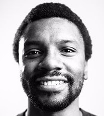
Dr Mwita Chacha (PI)
Dr Mwita Chacha is Associate Professor in International Relations at the Department of Political Science and International Studies, University of Birmingham. His research focuses on regionalism/regional integration and its intersection with domestic political and security outcomes.
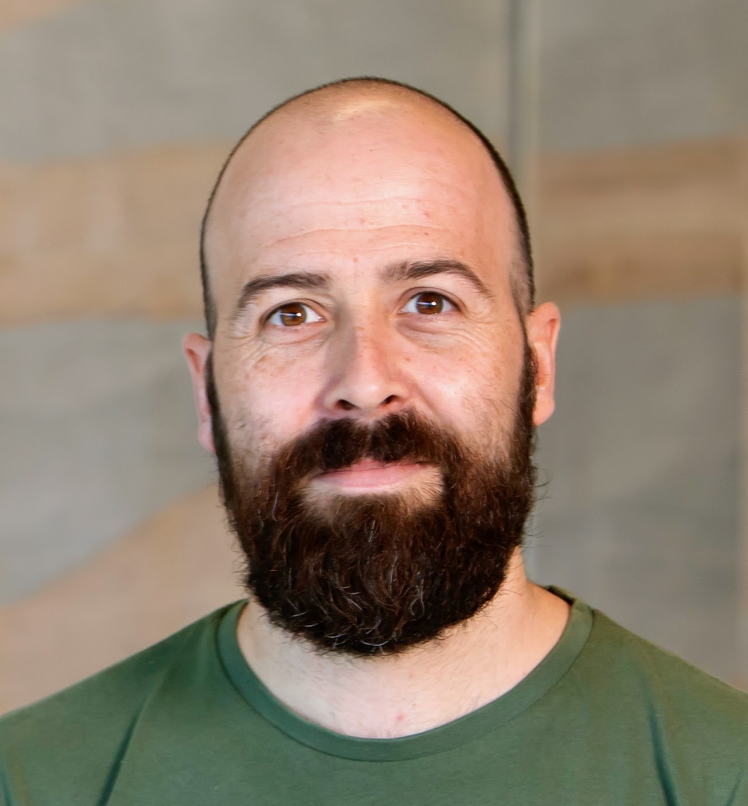
Dr Florian G. Kern (Co-PI)
Dr Florian G. Kern is Associate Professor in the Department of Government, University of Essex. His research focuses on governance in Africa. His work related to IPIA focuses particularly on how foreign policy reflects constituent views.
Eniye C. Dubakeme
Eniye C. Dubakeme is an Assistant Lecturer in the department of International Relations and Diplomacy, at Baze University. Her research focuses on Foreign affairs and governance for security in Afric
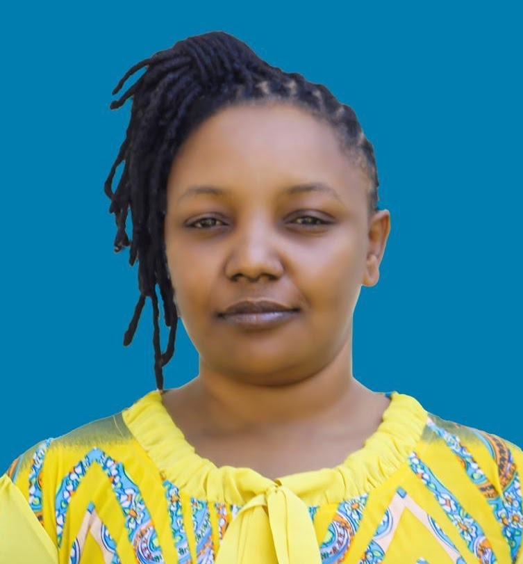
Dr Consolata Raphael Sulley
Dr Consolata Raphael Sulley is Lecturer in political science at the University of Dar es Salaam Tanzania. She holds a PhD in Political Science from Leipzig University, Germany. She has researched, consulted and published on democracy and the democratisation process in Africa (Kenya and Tanzania in particular), elections, party politics, gender and women’s political empowerment, public policy, local governance, project evaluation, human rights and humanitarianism.
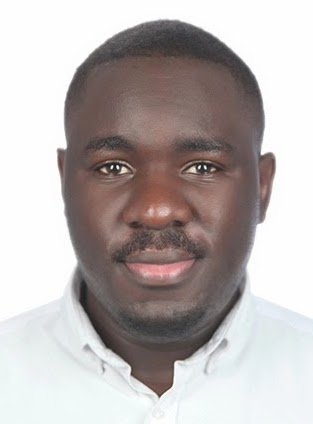
Dr Israel Nyaburi Nyadera
Israel Nyaburi Nyadera is a lecturer at the National Defense College, National Defense University, Nairobi, Kenya. He is a Swiss Government Excellence Postdoctoral Fellow at the Centre for Conflict, Development and Peacebuilding, Geneva Graduate Institute, Switzerland. Dr Nyadera has a PhD in Political Science from the University of Macau, a Masters in Conflict Analysis and Resolution from George Mason University, Washington DC, a Masters in International Relations from the Middle East Technical University, Ankara and a degree in Political Science from the University of Nairobi. He is a fellow under the Irregular Warfare Initiative, a joint production of Princeton University and Westpoint and previously a fellow under the India-Africa Security Programme at the MP-IDSA, New Delhi.
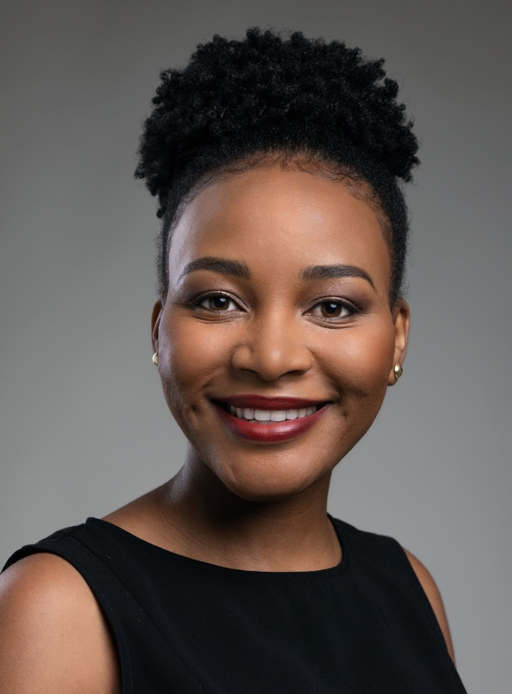
Dr Alecia Ndlovu
Dr. Alecia Ndlovu is a Political Scientist and Lecturer at the University of Cape Town, specialising in Comparative and International Political Economy as well as Quantitative Research Methods. Her research focuses on political institutions and development in Africa's resource-rich economies. She is currently co-editing the Encyclopedia of African Politics(Edward Elgar Publishing) and leads a Worldwide Universities Network-funded project on Mining Accountability and Development in Africa.
Participants
The workshop brings together early-career and established scholars working on a wide range of topics in international politics in Africa. Below are the participants and their research projects.
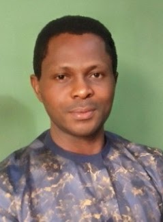
Andre Ben-Moses Akuche
Andre Ben-Moses Akuche is a PhD Candidate in International Relations at Obafemi Awolowo University, Ile-Ife, Osun State. His research interests include diplomacy, energy politics, foreign policy, international organisations, and conflict resolution.
Research topic: The global energy transition and Nigeria’s natural gas diplomacy.
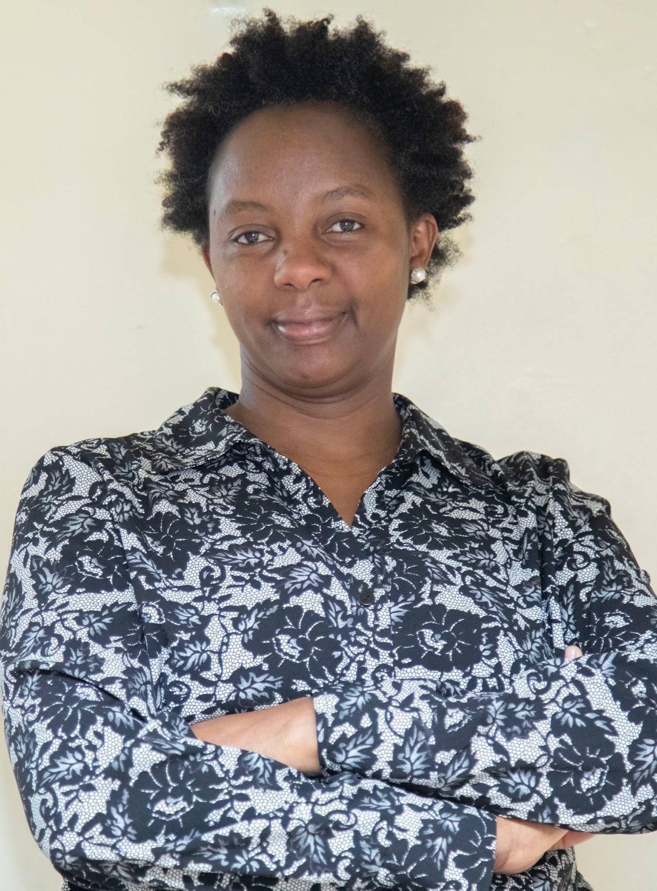
Caroline Shisubili Maingi
Caroline Shisubili Maingi is a Lecturer in International Studies and Philosophy at Strathmore University and a Doctoral Candidate in International Relations at the United States International University–Africa. Her research focuses on the intersection of regional integration, foreign policy, and political philosophy, with particular attention to the role of ideologies in shaping society. She brings a background in applied philosophy and ethics alongside practical experience in policy engagement at national and international levels.
Research topic: Enhancing popular participation for effective integration in the East African Community (EAC).
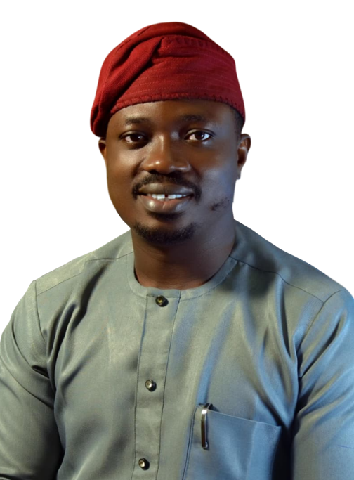
Dr Kingsley Ogunne
Kingsley Ogunne is a Post-Doctoral Researcher whose work spans the political economy of health, politics of global health, and climate justice. He earned a PhD in Political Science from Obafemi Awolowo University, Nigeria. His current research explores how African states exercise agency, assert strategic interests, and influence global health norms, frameworks, and policies.
Research topic: African states’ diplomatic strategies in global health governance.
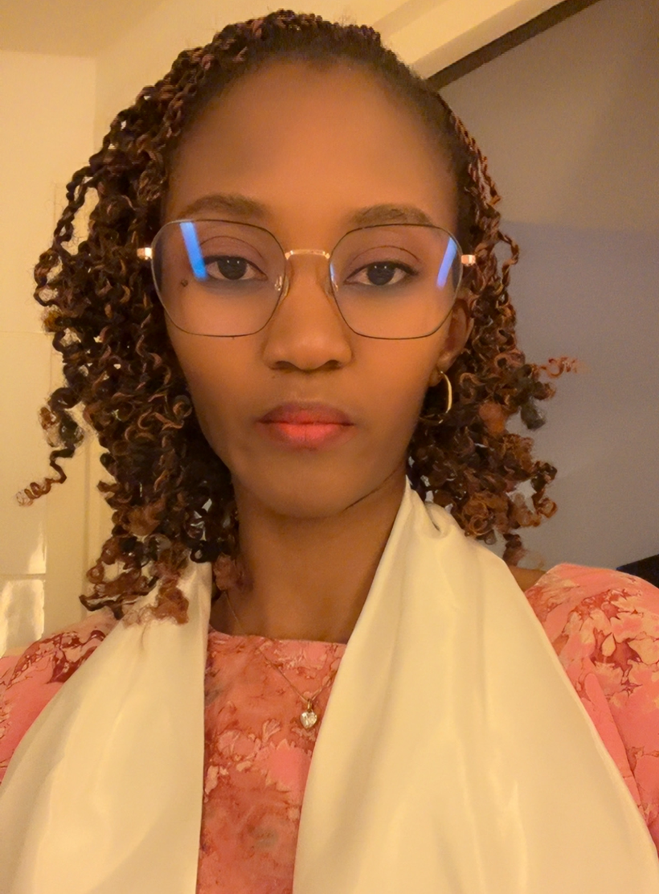
Fatou Bintou Niang
Fatou Bintou Niang is a PhD Candidate in Political Science at Gaston Berger University of Saint-Louis, affiliated with the Laboratory for the Analysis of Societies and Powers Africa/Diasporas (LASPAD). Her research focuses on universal health coverage, gender studies, feminism, international relations, and cultural heritage. She also works as a project manager, tutor, and adjunct lecturer, with strong involvement in academic supervision and the coordination of scientific activities.
Research topic: Regional diplomacy and peace in ECOWAS, with a focus on how multilateral action shapes policy.
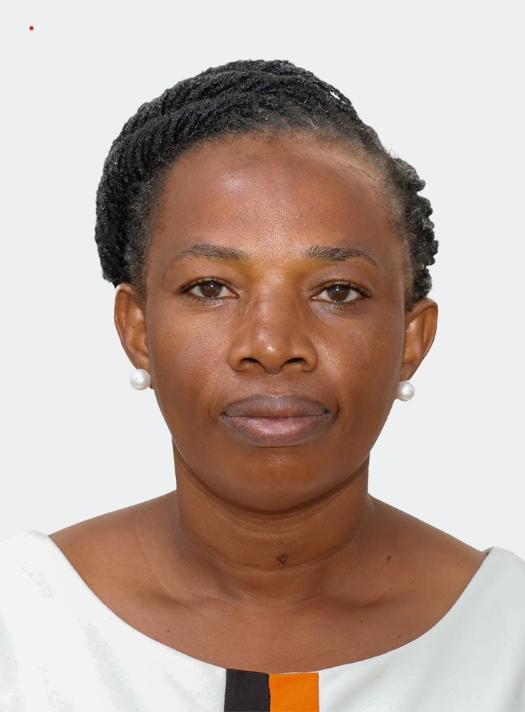
Dr Mary Baremirwe Bekoreire
Dr Mary Baremirwe Bekoreire is a Lecturer in the Governance Department and Coordinator of Higher Degrees at Kabale University. She has over two decades of experience in research, teaching, and strategic leadership, specialising in community development and policy. Her research interests focus on governance, public policy, gender, and political science, with a goal to inform policy.
Research topic: Sino–Western geopolitical influence and conflict dynamics in East African Community states.
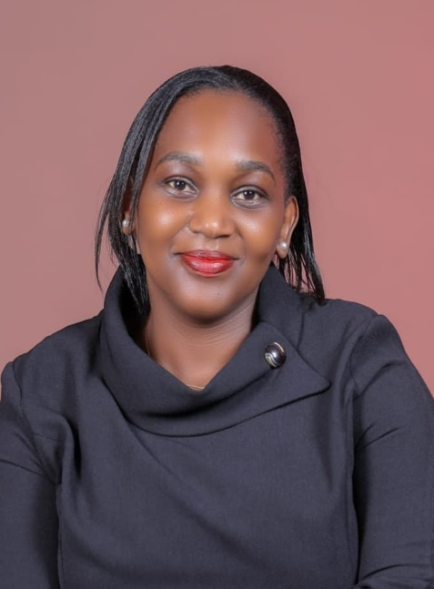
Dr Caroline Kathure Gatobu
Dr Caroline Kathure Gatobu is a Lecturer and Research Fellow at the National Defence University–Kenya. Her research examines the intersection of security, peace and conflict, and development in the Horn of Africa, focusing on how sovereignty, regional security dynamics, and human security challenges shape state and community resilience. She holds a PhD in Development Studies from Moi University and an MA in Development Studies from the Catholic University of Eastern Africa.
Research topic: Kenya’s role in regional stability and development in the Horn of Africa.
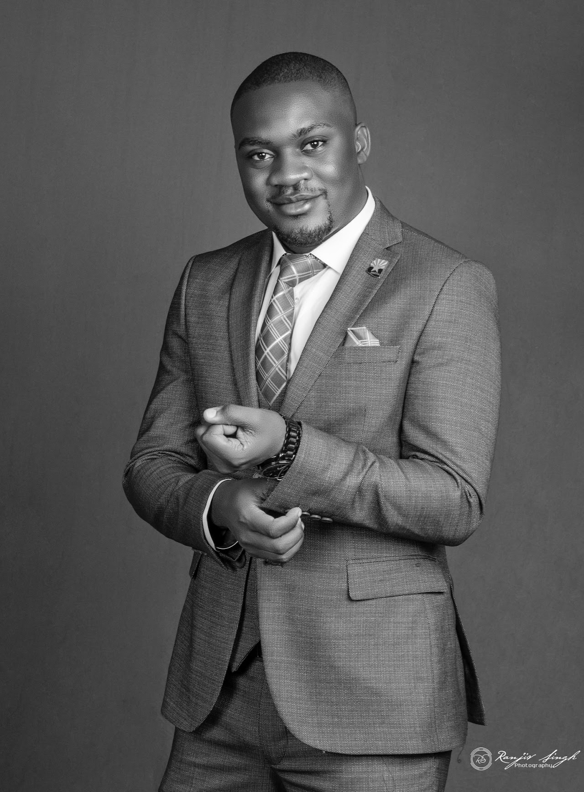
Alfred Makotsi
Alfred Makotsi is an Adjunct Lecturer at Kenya Methodist University and a PhD Candidate in Diplomacy and International Relations. He is a Mandela Washington Fellow (2025) and a Political Governance and Leadership Fellow (2017), with a strong background in political analysis and governance. His research and professional interests focus on diplomacy, democracy, election observation, and African politics.
Research topic: International election observation and democratic consolidation in Kenya.
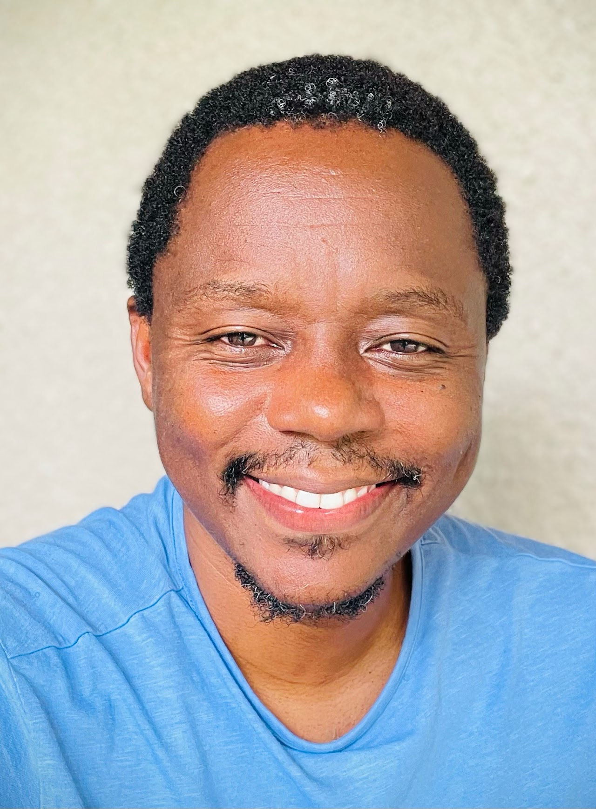
Dr Muhidin Shangwe
Dr Muhidin Shangwe is a Lecturer of International Relations in the Department of Political Science and Public Administration at the University of Dar es Salaam. His research focuses on African international relations, particularly in the Africa–China space, as well as the geopolitical and geoeconomic competition among major powers in Africa.
Research topic: South Africa’s response to the wars in Ukraine and Gaza as a case of African agency.
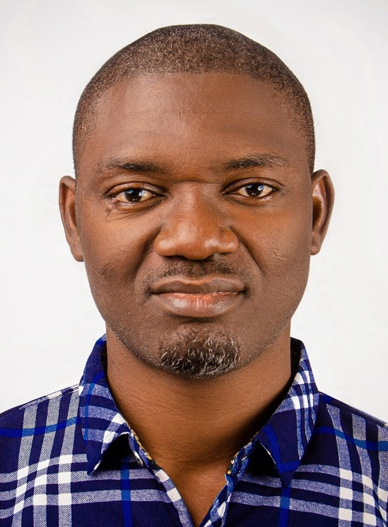
Dr Chikodiri Nwangwu
Dr Chikodiri Nwangwu is a Postdoctoral Research Fellow at the Centre for Africa–China Studies, University of Johannesburg, and a Senior Lecturer at the University of Nigeria, Nsukka. His research and teaching interests span African political economy, peace and conflict, elections, and social movement studies. He has published in journals including African Affairs, Security Journal, Review of African Political Economy, and the International Feminist Journal of Politics.
Research topic: Democratic recession and ECOWAS responses to military coups in West Africa.
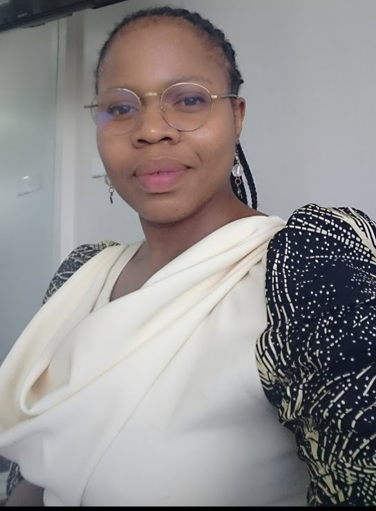
Dr Dikeledi Mokoena
Dr Dikeledi Mokoena holds a PhD in Political Science from the University of Pretoria and an MA, Hons, and BA from the University of the Witwatersrand. Her research interests are in feminist political economy, decoloniality, African feminism, and the politics of development in Africa. She has led multi-country research projects on illicit financial flows in the mining sector of Southern Africa, regional integration and migration in ECOWAS and SADC, and the AfCFTA.
Research topic: A decolonial feminist analysis of US economic statecraft in Africa, focusing on South Africa.
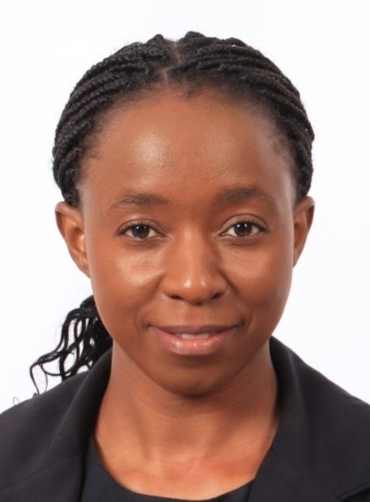
Tendai Ganduri
Tendai Ganduri is a Doctoral Candidate in Media Studies at the University of the Witwatersrand, South Africa. She holds an MSc in Media and Society Studies from Midlands State University, Zimbabwe, and was a Digital Humanism Fellow at the Institute for Human Sciences (IWM). She is particularly interested in digital humanities and the human dynamics of climate change, especially its domestic and global politics.
Research topic: Climate diplomacy and digital debate around COP26 in Zimbabwean and South African online spaces.
Dr Oluwatosin Ruth Ifaloye
Dr Oluwatosin Ruth Ifaloye is a Lecturer in International Relations at Covenant University, Nigeria. She specialises in transitional justice, stakeholder engagement, and African international politics.
Research topic: Localising transitional justice in The Gambia through stakeholder engagement and international norms.